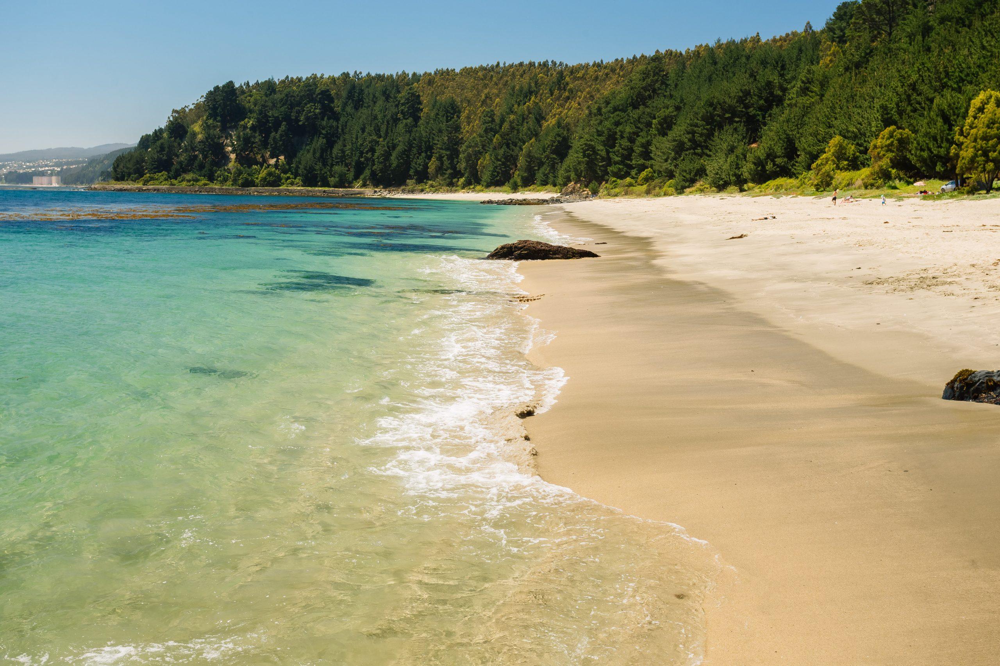
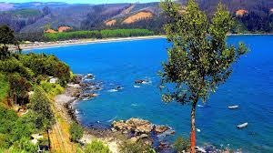
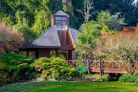
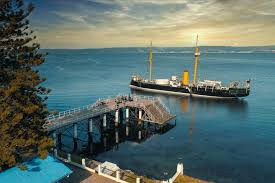
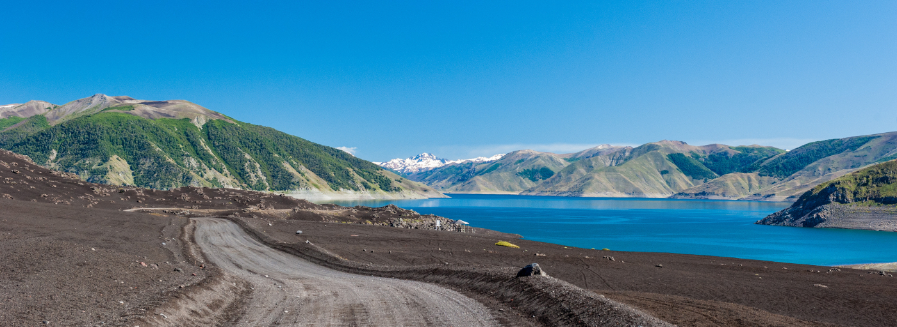
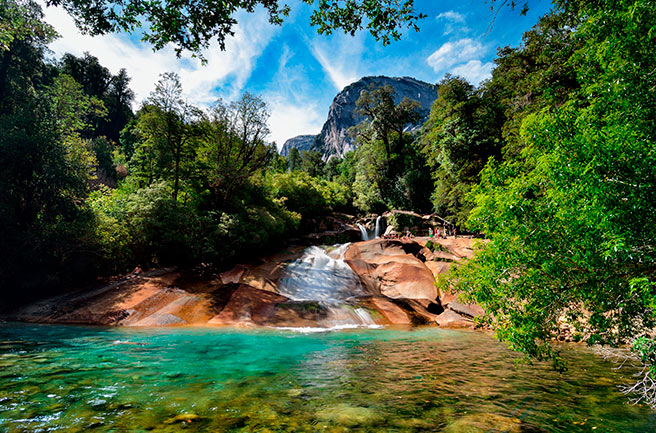
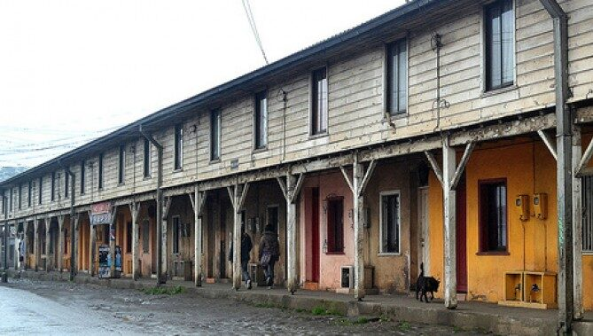

Destinos Populares en la Region Del Biobio

Dichato
Balneario tranquilo con playas seguras y una destacada oferta gastronómica marina.

Saltos del Laja
Impresionantes cascadas que destacan por su belleza natural y fácil acceso.

Colcura
Playa pintoresca con aguas tranquilas, ideal para descansar y disfrutar del paisaje.

Parque Jorge Alessandri
Parque natural con senderos, áreas verdes y actividades para toda la familia.

Monitor Huáscar
Histórico buque museo que refleja la historia naval del país.

Parque Nacional Laguna del Laja
Paisajes volcánicos únicos, lagunas y senderos ideales para disfrutar la naturaleza y la aventura.

Parque Nacional Nonguén
Reserva de bosque nativo con senderos tranquilos, perfecta para desconectarse cerca de la ciudad.

El Chiflón del Diablo
Histórica mina de carbón que ofrece una experiencia única bajo tierra y un viaje al pasado minero.